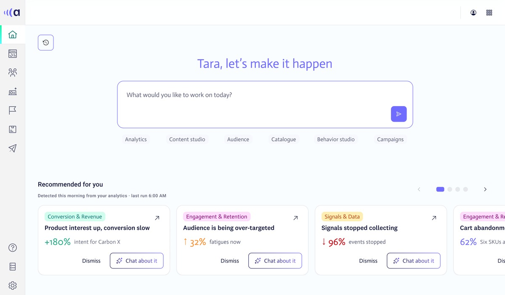
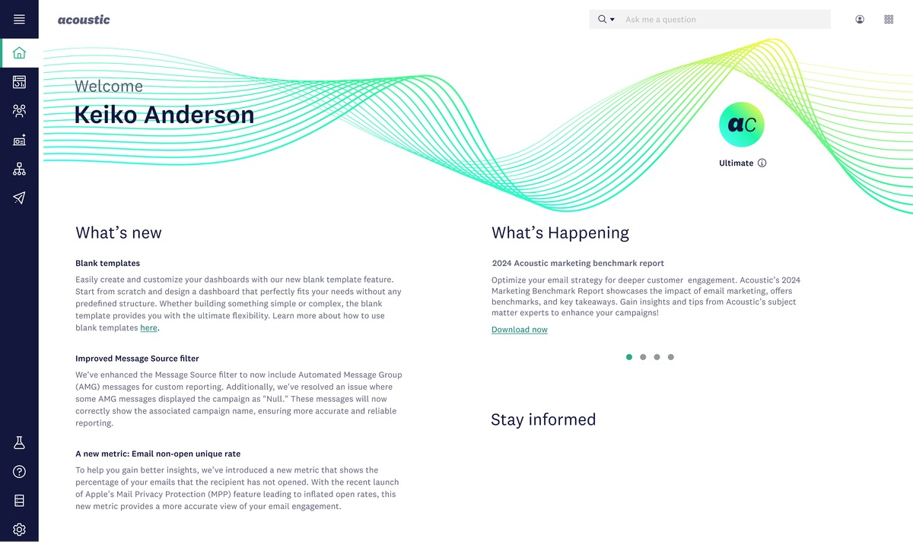
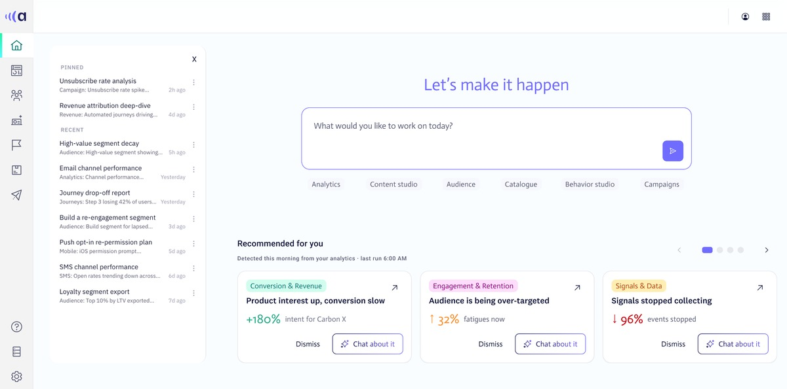
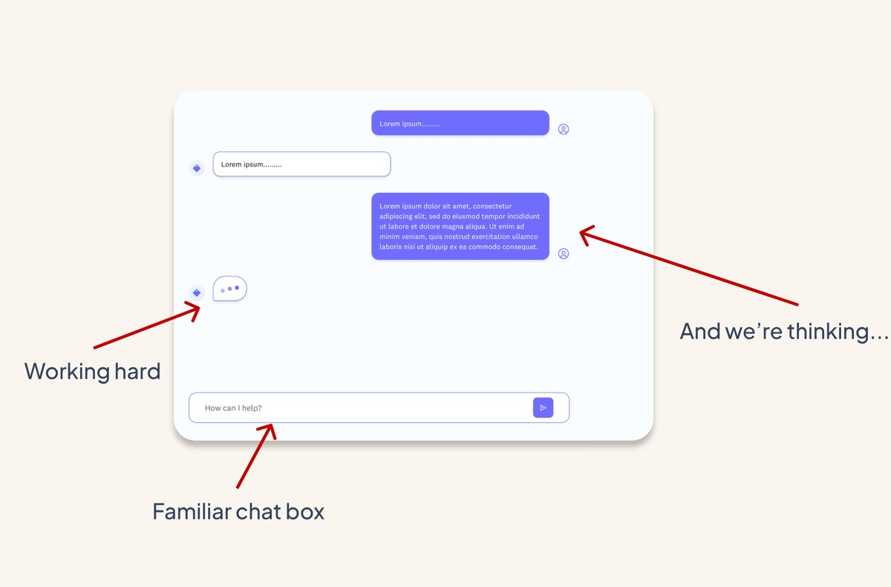
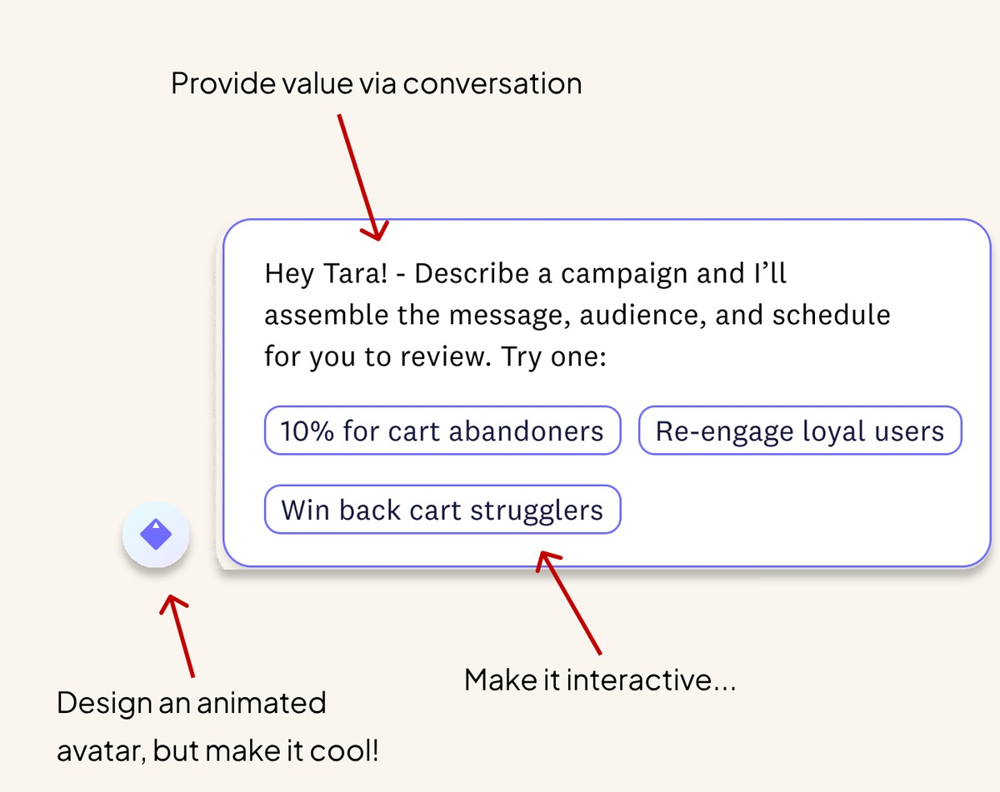

AI-powered homepage · Acoustic
From signal to send
A new home for behavioral marketing, where you ask what's happening and leave with a campaign.

The situation
Acoustic captures live customer behavior: clicks, hesitations, return visits. But marketers logged in to a wall of copy, hunted for something interesting, pulled a report and hopped between tools before they could act.
The task
Make real-time behavioral intelligence feel like talking to a smart colleague, and put it all in one entry point instead of another list report.
What I did
I designed a homepage built around a chat. It surfaces the signals worth acting on, explains what is happening and why, and lets a marketer start a campaign without leaving the conversation. A teammate and I split the work, and she designed the insight tiles.
What happened
Marketers act on a signal 38% faster, and more of them complete campaign tasks right from the homepage. Six separate modules now sit behind one starting point.



Explore
Dig in without losing your place
One chat reaches analytics, audiences, campaigns and more, so the thread of the task never breaks.

Act
No SQL, no report building
The assistant reads live behavior, suggests the next move, and gets the campaign started right there.
38%
Faster to act on a behavioral signal
22%
More marketers engaging with AI recommendations
41%
More campaign tasks completed from the homepage
6
Marketing modules unified into one entry point
The question isn't how much data to show. It's whether this is worth your attention.